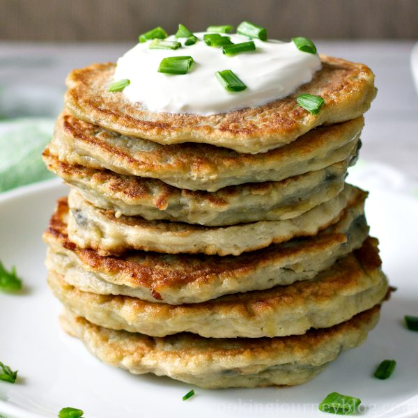
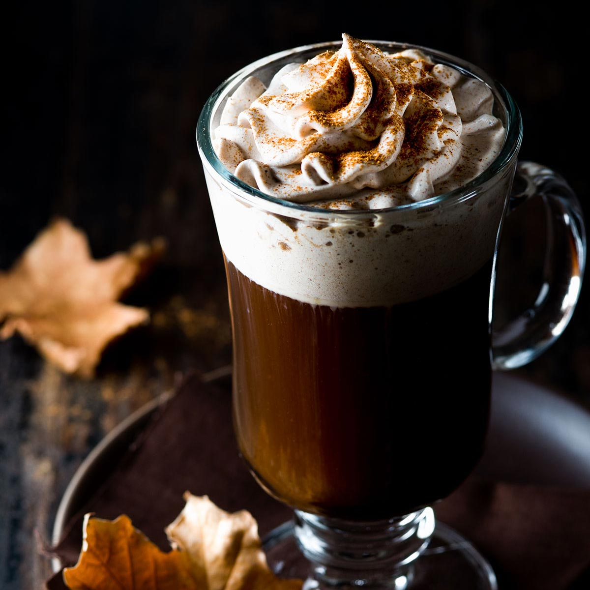

Гастрономія
Ірландська кухня – чи багато ми знаємо про кулінарні уподобання жителів цієї країни? Як правило, Ірландія асоціюється з кавою, ірландським рагом і картоплею. Звичайно, традиційним для ірландської кухні є пиво. Якщо ви збираєтеся в подорож до Ірландії, буде не зайвим розібратися у кулінарних традиціях країни та скласти список національних ірландських страв.
Коддл
У 16 столітті в Ірландії почали вирощувати картоплю, відтоді різко змінився як уклад життя місцевих жителів, так і національні страви. З цих часів бульба стала основою раціону селянських сімей. Відома національна страва Ірландії – коддл із ковбаси, бекону, картоплі, інших овочів. Раніше коли в країні ще не вирощували картоплю, замість неї використовували ячмінь.
Чемп
Чемп - пюре, збите з молоком, приправлене зеленою цибулею.

Боксті
Боксті – у перекладі означає «хліб бідняка», зовні страва нагадує оладки з картоплі, основні інгредієнти – пюре, олію, борошно та сода. Готують двома способами – варять чи смажать.

Фіш енд Чіпс
Якщо потрібно швидко вгамувати голод, віддають перевагу страві «Фіш енд Чіпс» — риба з картоплею фрі. Багато хто вважає, що це традиційний фаст-фуд із Британії, але батьківщиною частування є Дублін.
Напої
Старовинний напій - мід. Готували частування з медового розчину. За аналогічним рецептом на Русі готували медовуху.
Популярний алкогольний напій – пиво Гіннес. Ірландці кажуть – справжнє пиво Гіннес дуже темне, крізь нього можна побачити лише промінь сонця, а також світло, яке відбиває алмаз.
Вже у 15 ст. на Смарандовому острові освоїли процес дистиляції, з того часу фахівці розробляли ексклюзивні рецепти віскі. Окрім традиційних сортів віскі на Смарагдовому острові пропонують туристам унікальний, чистий напій із ячменю та солоду.
Традиційна ірландська кава більше нагадує двокомпонентний коктейль із традиційної чорної кави та віскі. Для особливого, оригінального присмаку додають коричневий цукор, збиті вершки.
